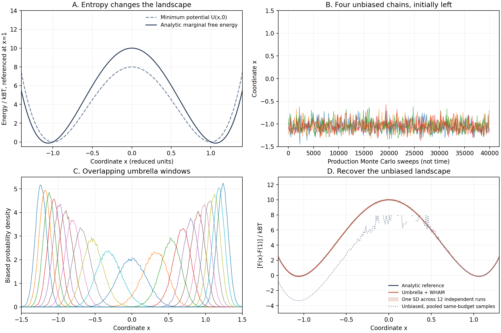

Chemical Reaction Computation - Part IV
Free Energy and the Events We Rarely See
You start a molecular simulation and watch it move. Bonds vibrate, solvent molecules rotate, and the energy fluctuates without anything obviously going wrong. Yet the event you care about never happens. Is the reaction impossible, is the model wrong, or have you simply spent the entire calculation watching one small part of a much larger equilibrium ensemble?
This is a different difficulty from the one in Part III. Even if the relevant electronic states and forces were known perfectly, a simulation could still fail by visiting the wrong proportions of configurations. We now return to another historical strand that grew during the 1970s: changing where we sample so that a finite calculation can reveal otherwise inaccessible thermodynamics. The worked example will recover a free-energy profile from a two-coordinate model with an analytic answer. We will then ask what is still missing before that profile can become a reaction time.
1. The historical shift: do we have to sample naturally?
Equilibrium statistical mechanics tells us how to weight configurations. It does not require our computational procedure to spend its effort in those same proportions. Torrie and Valleau's 1974 non-Boltzmann sampling work, followed by their 1977 umbrella-sampling paper, made that distinction productive: deliberately sample a more useful distribution, then correct the weights when estimating the original equilibrium properties.
The idea did not begin as a theory of one particular chemical reaction. Its significance for reaction calculations is that configurations around a bottleneck can be scientifically decisive while being statistically rare. Repeatedly sampling a reactant basin tells us about that basin; it may tell us almost nothing about the bottleneck or the relative weight of another basin.
There are therefore two separate questions. First, which configurations matter, and how common are they at equilibrium? Second, how does the physical system move between them? Umbrella sampling primarily addresses the first. Keeping this distinction visible will prevent a common mistake later: interpreting the clock of a biased simulation as the clock of the chemical reaction.
2. From a potential energy to a free energy
Let \(\mathbf R\) contain the molecular coordinates and \(U(\mathbf R)\) their potential energy. In a classical canonical ensemble at fixed temperature and volume, after integrating out momenta, the configurational density is
Suppose we describe progress using a collective variable \(s=\xi(\mathbf R)\): a distance, a difference of distances, or another chosen function. Many molecular configurations share the same value of \(s\). To obtain its probability density, sum over all of them:
The potential of mean force, or free-energy profile along this coordinate, is defined by the logarithm of that marginal density. Taking a ratio removes both the normalization and the arbitrary reference constant:
This is not the energy of a single optimized structure. It contains the statistical weight of all the configurations hidden behind each value of \(s\). A region can be unfavorable because its configurations have high energy, because there are few accessible configurations there, or both. The profile also depends on the coordinate and its measure: nonlinear reparameterization introduces a probability-density Jacobian. A distance histogram, for example, cannot be interpreted without considering the associated geometric measure.
For a Cartesian coordinate \(x\) and remaining coordinates \(y\), the same definition connects free energy to a mean force. Write \(Z_x=\int dy\,e^{-\beta U(x,y)}\); differentiating under the integral gives
Thus \(-F'(x)\) is a conditional mean force. General nonlinear collective variables require the corresponding geometric terms; the simple expression above is for the Cartesian model used here.
3. A model where the missing entropy can be calculated
Use reduced units with \(k_{\mathrm B}T=1\), and two dimensionless coordinates:
The coordinate \(x\) connects two basins. The second coordinate represents an environmental or internal degree of freedom whose accessible width changes with \(x\). At fixed \(x\), the minimum-energy value is \(y=0\), so an optimized potential-energy scan returns only \(U_0(x)\).
For the free energy we must integrate, not minimize. The elementary Gaussian integral gives
Taking \(-k_{\mathrm B}T\ln Z_x\), and choosing the reference at \(x=1\), yields the analytic answer:
At the center, the potential-energy increase relative to \(x=1\) is 8, but the free-energy increase is 10. The additional 2 comes from the narrower accessible distribution of \(y\), not a higher minimum potential energy. The free-energy minima are slightly displaced from \(x=\pm1\); throughout the numerical table we compare \(F(0)-F(1)\), not the barrier measured from the optimized free-energy minimum.
The associated equilibrium density ratio follows immediately:
This is a ratio of densities in the chosen coordinate, not a transition probability per unit time. It already tells us why collecting a well-resolved histogram at the center is demanding. Symmetry independently fixes the integrated right-basin probability, \(P(x>0)=1/2\), providing a second exact check.
4. Add a bias, then remove its statistical effect
A harmonic umbrella window adds a known potential around a chosen coordinate value:
Sampling with \(U+w_i\) holds the system near window \(i\), including regions it would otherwise rarely visit. Because the bias depends only on \(s\), it can be taken outside the integral over configurations at fixed \(s\). The resulting marginal is
Rearranging shows how the original distribution is recovered within a sampled window:
The sign matters: subtract the umbrella potential from the free energy inferred from its biased histogram. But each window has an unknown constant \(C_i\). Overlapping windows supply the information needed to determine their relative offsets. Without overlap, two beautifully sampled local profiles can still have an undetermined relative height.
The same change of measure also gives an observable estimator. Substitute the biased distribution into the target average, then use the identical substitution to normalize it:
This identity is not a license to extrapolate from absent data. If important configurations have effectively never been sampled, their large formal weights do not conjure them into existence. A useful bias improves coverage; a correct reweighting formula alone cannot repair missing coverage.
5. Joining windows: the WHAM equations
The weighted histogram analysis method, WHAM, gave an organized way to combine overlapping simulations. Kumar and colleagues' 1992 formulation for biomolecular free-energy calculations built on multiple-histogram ideas. It should not be conflated with the original 1970s proposal to sample non-Boltzmann distributions.
For equal-width bins, let \(p_k\) be the unknown unbiased probability mass in bin \(k\), \(H_{ik}\) the count from window \(i\), and \(N_i=\sum_kH_{ik}\). Approximate the bias as constant across a bin and set \(b_{ik}=\beta w_i(s_k)\), \(f_i=-\ln c_i\). The biased probability is then
To see the estimator, write the histogram log likelihood, dropping constants independent of \(p\):
Since \(\partial c_i/\partial p_k=e^{-b_{ik}}\), stationarity gives
The likelihood is unchanged by a common rescaling of \(p\), so normalization fixes that freedom. Iterate the last expression with the equation for \(f_i\), enforcing \(\sum_kp_k=1\). Finally convert bin masses to density:
This elementary likelihood treats observations as independent. Molecular samples are correlated; efficient weighting and uncertainty estimation must account for that. Our equal-length-window implementation uses the basic equations for the central estimate and independently repeated whole calculations for uncertainty. Saving every fifth sweep reduces storage, but does not establish independence. A small WHAM iteration residual only means the equations were solved—not that the molecular sampling was adequate.
6. The actual calculation
The sampler sees only \(U(x,y)\) and the added umbrella, never the analytic free energy. Each sweep first draws \(y\) from its exact conditional Gaussian, then proposes a local Gaussian displacement of \(x\). For a symmetric proposal, detailed balance is satisfied by the Metropolis acceptance rule:
The target-density ratio is the exponential, and the symmetric proposal probabilities cancel. These are equilibrium Monte Carlo updates, not a physical dynamical model. Exact conditional updates also make this toy example unusually forgiving: a real solvent may have slow hidden coordinates that this sampler avoids by construction.
- Place 21 umbrella centers from \(-1.5\) to \(1.5\), with spring constant 60. Initialize each window at its center.
- For each window, discard 5,000 sweeps, collect 40,000 production sweeps, and save a histogram observation every five sweeps. Use a proposed \(x\)-displacement standard deviation of 0.14.
- For the unbiased baseline, run 21 independent chains with the same updates and the same per-chain budget, all initially at \(x=-1\), but with no umbrella.
- Repeat both complete protocols independently 12 times. Each repetition supplies 168,000 saved observations per method; these are correlated observations, not 168,000 independent configurations.
- Solve WHAM, align at \(x=1\), inspect window overlap, compare independent repetitions, and test histogram-bin sensitivity.
The comparison fixes the number of potential evaluations and saved observations. It does not establish an implementation-independent speedup, and many short left-initialized chains are not equivalent to one sufficiently equilibrated long chain. The purpose is to expose finite-budget trapping, not to claim that unbiased sampling can never work.

| Quantity | Analytic reference | Unbiased sampling | Umbrella + WHAM |
|---|---|---|---|
| Right-side probability, \(P(x>0)\) | 0.5000 | \(0.0381\pm0.0466\) | \(0.5038\pm0.0166\) |
| \([F(0)-F(1)]/(k_{\mathrm B}T)\) | 10.000 | Not reliably resolved | \(10.013\pm0.052\) |
The \(\pm\) values are the standard deviations of the 12 independent run estimates, not the standard errors of their mean. The potential-energy difference alone would give 8 rather than 10. For the unbiased run, the problem is more severe than a noisy barrier estimate: the relative population of the two basins is wrong. Its histogram looks locally plausible while failing the simplest global equilibrium test.
All neighboring umbrella windows overlap substantially: the smallest observed overlap coefficient \(\sum_k\sqrt{q_{ik}q_{i+1,k}}\) is 0.684. The coefficient is one for identical normalized histograms and zero for disjoint support. It is a useful coverage diagnostic, not proof that all hidden coordinates equilibrated.
The primary bin width is 0.012. Halving it changes the mean sampled \(F(0)-F(1)\) from 10.013 to 10.025, while increasing the run-to-run spread because each bin contains fewer observations. To separate discretization from sampling noise, a second diagnostic supplies WHAM with analytically integrated, noiseless window histograms: it returns 9.99820 for width 0.012 and 9.99955 for width 0.006, approaching the exact value 10. These are validation inputs only; the production sampler and reconstruction do not receive the analytic reference.
Here “exact” refers to the analytic marginal of the specified classical model. This is not a DVR calculation: quantum mechanics is not needed to establish the reference equilibrium distribution for the sampling question we chose. The test isolates a sampling error from a Hamiltonian error or a nuclear-quantum approximation.
7. A correct free energy still does not determine a clock
We can make this limitation quantitative. Define a separate one-dimensional overdamped diffusion model on the same \(F(x)\), with constant diffusion coefficient \(D\):
Here \(W_t\) is a Wiener process, with an increment variance equal to elapsed time. This stochastic equation is a new dynamical assumption; it is not inferred from the Monte Carlo updates and is not claimed to be the exact projection of the original two-coordinate system.
Its probability current is \(J=-D(\beta F'p+\partial_xp)\). Setting the equilibrium current to zero gives \(\partial_x\ln p=-\beta F'\), hence \(p_{\mathrm{eq}}\propto e^{-\beta F}\), regardless of the value of \(D\). Changing \(D\) can therefore change the clock while leaving the equilibrium landscape unchanged.
Derive a first-passage time
Let \(\tau(x)\) be the mean time to reach an absorbing boundary \(b\), with a reflecting boundary \(a\) on the left. Over a short time, \(\tau(x)=dt+\mathbb E[\tau(x+dx)]\). Taylor expansion with \(\mathbb E[dx]=-D\beta F'dt\) and \(\mathbb E[(dx)^2]=2Ddt\) yields
Multiply by the integrating factor \(e^{-\beta F}\) and integrate once from the reflecting boundary:
Integrating again and imposing \(\tau(b)=0\) gives
Numerical quadrature for \(a=-1.6\), \(b=1\), and initial \(x=-1\) gives:
| \(D\), reduced units | Equilibrium \(F(x)\) | Mean first-passage time |
|---|---|---|
| 1 | Unchanged | 3212.00 |
| 0.1 | Unchanged | 32120.01 |
The factor of ten follows exactly from \(\tau\propto D^{-1}\); refining the quadrature changes these values by less than \(10^{-8}\) in the stated time units. The equilibrium comparison here is for the same closed-domain model before introducing the absorbing boundary. Once probability is absorbed, the surviving process is not an equilibrium ensemble.
This is why a well-converged umbrella profile is not, on its own, a measured reaction rate. A real projected coordinate may have position-dependent diffusivity or memory, and the selected coordinate may miss the event that actually limits progress. Even \(1/\tau\) is not automatically a phenomenological first-order rate constant: the initial ensemble, absorbing boundary, and separation of relaxation and escape times must be specified.
8. The exploration branches: configurations or pathways?
Once non-Boltzmann sampling became a practical tool, several distinct questions remained. How should a bias be chosen? How can hidden slow variables be detected? Can we sample the rare trajectories themselves without replacing their physical dynamics?
The 1998 transition-path sampling work of Bolhuis, Dellago, and Chandler illustrates the latter direction. Instead of only sampling configurations, it samples an ensemble of reactive paths. Stable regions must still be defined, and path-space sampling must converge, but an entire reaction mechanism need not be supplied as a one-dimensional progress coordinate in advance. Obtaining a rate additionally requires the appropriate path probabilities and normalization, not merely a collection of successful trajectories.
Laio and Parrinello's 2002 metadynamics work pursued adaptive exploration of free-energy landscapes with a history-dependent bias in selected collective variables. It addresses the problem of repeatedly revisiting already explored regions. It does not make the choice of variables irrelevant, nor does the biased simulation automatically preserve physical reaction times.
Umbrella sampling, adaptive biasing, and path sampling thus should not be arranged as “old method, better method, final method.” One organizes equilibrium coverage in chosen windows; another adapts exploration; another changes the sampled object from configurations to trajectories. Their usefulness depends on whether the scientific question concerns populations, mechanisms, or rates.
9. Returning to experimental observables
For two chemically defined basins, a reconstructed equilibrium distribution can predict their population ratio. Integrate before taking the logarithm:
A difference between two basin free energies is not generally the difference between the values at their minima: basin widths and additional configurations matter. For binding, solution reactions, or other changes in molecular number, standard-state and ensemble conventions must also match experiment.
Equilibrium populations can be tested against appropriately interpreted structural or spectroscopic measurements. Reaction times require dynamical information as well. A narrow, smooth profile is therefore not the finish line. We should ask whether its basins mean the same thing as the experimentally distinguished species, whether slow hidden coordinates have equilibrated, and what observable would reveal an incorrect population or mechanism.
The next part turns to tunneling and quantum nuclear reaction dynamics. That is a different question again: not just how to sample rare configurations efficiently, but when a classical description of the nuclei is inadequate. We will keep a small controlled calculation and an explicit reference, without treating any one method as the destination of the series.
Reproduce and inspect
- Standalone Python script: sampler, WHAM, analytic checks, first-passage quadrature, and figures.
- Independent-run estimates and overlap diagnostics; free-energy profiles.
- Window histograms; the four displayed unbiased chains.
- Noiseless histogram-bin check; first-passage times and quadrature check.
python assets/code/reaction-dynamics/umbrella_free_energy.pyRequires NumPy, SciPy, and Matplotlib. The random seed and complete sampling budget are fixed in the script. Only compact data and figures are written; raw sampling trajectories are not needed for the published analysis. Undefined histogram values are recorded as NaN, not interpreted as finite free energies.
Historical sources
- Torrie and Valleau, “Monte Carlo Free Energy Estimates Using Non-Boltzmann Sampling: Application to the Sub-Critical Lennard-Jones Fluid,” Chem. Phys. Lett. 28, 578–581 (1974).
- Torrie and Valleau, “Nonphysical Sampling Distributions in Monte Carlo Free-Energy Estimation: Umbrella Sampling,” J. Comput. Phys. 23, 187–199 (1977).
- Kumar, Rosenberg, Bouzida, Swendsen, and Kollman, “The Weighted Histogram Analysis Method for Free-Energy Calculations on Biomolecules. I. The Method,” J. Comput. Chem. 13, 1011–1021 (1992).
- Bolhuis, Dellago, and Chandler, “Sampling Ensembles of Deterministic Transition Pathways,” Faraday Discuss. 110, 421–436 (1998).
- Laio and Parrinello, “Escaping Free-Energy Minima,” PNAS 99, 12562–12566 (2002).